Spesifikasi Perangkat Lunak Rasentra Odoo
Odoo 18 CommunityIndoguna GroupCV Solo & CV Lombok
Rasentra adalah sistem operasional meatshop dan restoran Indoguna: penjualan daging ber-Pack ID, restoran dengan dapur digital, inventory outlet, dan integrasi ke SAP Business One. Dokumen ini dimulai dengan gambar arsitektur, dilanjutkan konsep inti dan panduan penggunaan per peran.
1. Gambar arsitektur Rasentra Odoo
Rasentra dibangun ulang di atas Odoo 18 Community tanpa modul Enterprise. Central menyimpan master, aturan dan proyeksi data HQ, serta satu-satunya pihak yang berbicara dengan SAP. Setiap outlet menjalankan Rasentra Lokal sehingga penjualan, dapur dan inventory tetap berjalan walau internet putus; data disinkronkan lewat kontrak API yang sama dengan versi Laravel.
2. Ruang lingkup dan prinsip
| Aspek | Ketentuan |
|---|---|
| Perusahaan | CV Solo Kulina Utama (sap_solo) dan CV Lombok Kulina Utama (sap_lombok), data terpisah per perusahaan. |
| Outlet | Meatshop dengan grill corner dan restoran (R&B Solo, El Primo Lombok). Lombok memakai WITA. |
| Platform | Odoo 18 Community + OCA; tanpa Enterprise, tanpa layanan IAP. |
| Offline | Lokal tetap melayani saat koneksi ke Central putus; outbox mengirim ulang saat tersambung. |
| Idempoten | Setiap event punya UUID; event berulang tidak membuat data ganda di Central maupun SAP. |
| Audit | Approval, perubahan status pack, posting SAP dan impor XML tercatat dengan pelaku dan alasan. |
3. Peta modul
| Modul | Tanggung jawab |
|---|---|
| rasentra_core | Perusahaan (CV), wilayah, outlet, perangkat, peran karyawan, harga berversi, ledger stok, audit, approval PIN. |
| rasentra_pack_id | Pack ID di atas stock.lot: status, berat, label, kedaluwarsa, riwayat, penguncian per keranjang. |
| rasentra_promo | Mesin promo (port Laravel), versi promo, simulasi, target wilayah/outlet, ack outlet. |
| rasentra_pos_meatshop | POS retail: scan Pack ID, promo, validasi harga di server, outbox struk & retur. |
| rasentra_payment_qris / rasentra_cash_control | QRIS dan EDC terintegrasi (simulasi), kontrol kas, tutup sesi. |
| rasentra_recipe | Resep berversi (menu, prep virtual, prep berstok), modifier, uji siklus, maker-checker. |
| rasentra_cooking_fee | Tarif jasa masak berversi, cooking job per Pack ID, hak layanan dari struk retail. |
| rasentra_stock_count | Terima, cek, waste, karantina, release, opname dua putaran, dokumen penyesuaian stok. |
| rasentra_kitchen | KDS station & expeditor, tiket delta, konsumsi resep, split bill, produksi batch. |
| rasentra_mobile_terminal | Kunjungan meja bertoken, peta meja dengan status dapur, minta tagihan, pindah/gabung. |
| rasentra_sync_outlet / rasentra_sync_central | Outbox, agen sinkron, API /api/v1/sync (OCA fastapi), inbox, publikasi, heartbeat. |
| rasentra_reconcile | Proyeksi HQ (struk, retur, stok) dan rekonsiliasi tutup hari. |
| rasentra_sap_b1 | Posting Service Layer per CV, mapping, pengecualian, mode simulasi, cek kesehatan. |
| rasentra_sap_xml | Impor NMEXML MSI/MSR aman ke staging, dedup, selisih pembulatan, jalur posting. |
| rasentra_monitor / rasentra_dashboard | Status Central dan dashboard grup. |
| rasentra_theme / rasentra_docs | Tema ringan food specialist; menu Spesifikasi & Panduan. |
| rasentra_demo, rasentra_demo_solo, rasentra_demo_lombok | Data demo grup, CV Solo dan CV Lombok (terpisah). |
4. Konsep inti
4.1 Pack ID
Pack ID adalah label kemasan daging hasil timbang pusat. Berat, harga label, batch dan kedaluwarsa melekat pada pack, sehingga kasir tidak mengetik berat dan stok dapat dilacak per kemasan.
4.2 Sinkronisasi Central–Lokal
Transaksi di outlet selalu ditulis ke outbox dalam transaksi database yang sama, lalu dikirim agen sinkron. Central membalas ack per event. Arah sebaliknya, master (harga, promo, resep, tarif) diterbitkan sebagai publikasi berversi yang ditarik Lokal memakai kursor.
4.3 Maker-checker dan versi
4.4 Cooking fee
4.5 Dapur
4.6 SAP dan XML
5. Peran dan hak akses
| Peran | Grup Odoo | Akses utama |
|---|---|---|
| Admin pusat | Rasentra / Admin pusat | Semua menu Central, perusahaan, pengguna, perangkat |
| Merchandising | Rasentra / Merchandising | Dashboard, produk & harga, promo, resep & cooking fee, laporan |
| Finance | Rasentra / Finance | Dashboard, Status Central, SAP, rekonsiliasi, XML, laporan, audit |
| Kepala outlet | Rasentra / Kepala outlet + POS Manager | Approval PIN, opname, tutup sesi dan hari |
| Kasir / pelayan | POS User + karyawan pos_hr | Penjualan, pembayaran, meja; void/refund hanya mengajukan |
| Chef / dapur | Rasentra / Dapur | Layar dapur, resep (baca), produksi batch |
| Gudang | Rasentra / Petugas gudang | Handheld terima/cek/waste, opname |
| Semua peran | Pengguna internal | Menu Spesifikasi & Panduan |
6. Integrasi
| Antarmuka | Arah | Isi |
|---|---|---|
| /api/v1/sync/events | Lokal → Central | order.finalized, order.returned, stock.adjusted, day.closed, cash |
| /api/v1/sync/changes | Central → Lokal | publikasi berversi: harga, promo, resep, cooking fee, karyawan |
| /api/v1/sync/ack, /heartbeat | Lokal → Central | status penerapan, antrean outbox, selisih jam, hari buka |
| SAP B1 Service Layer | Central → SAP | Invoices, IncomingPayments, CreditNotes, InventoryGenExits/Entries |
| NMEXML MSI/MSR | File → Central | staging dokumen sumber; jalur posting per outlet = xml | service_layer |
7. Keamanan dan kebutuhan non-fungsional
| Kebutuhan | Implementasi |
|---|---|
| Keamanan data | Aturan perusahaan dan outlet; token perangkat di-hash; kredensial SAP hanya di Central. |
| XML aman | Tanpa DTD/entity, tanpa jaringan, maks. 20 MB dan 500.000 elemen. |
| Zona waktu | Tanggal bisnis per outlet (WIB Solo, WITA Lombok). |
| Kinerja | Scan pack dan finalisasi struk di server Lokal; Central diproses batch dan cron. |
| Ringan | Tema hanya warna dan SVG kecil; tanpa font web atau pustaka tambahan. |
8. Pengujian
| Kode | Skenario |
|---|---|
| U01 | Dua Pack ID → struk Rp650.000, 3,250 kg ke outbox |
| U02 | Pack sama di dua kasir: satu ditolak |
| U05 | Promo hanya di outlet target |
| U07 | Kirim ke dapur hanya delta |
| U08 | Split bill memindahkan item KDS |
| U09 | Konsumsi resep 10 porsi |
| U10 | Produksi saus berstok |
| U12 | Neraca produksi dan susut |
| U14 | Event berulang tanpa duplikasi |
| U16 | Posting sebagian, retry pembayaran saja |
| U25–U30 | Cooking fee: dua jalur, tarif, hak layanan, batal sebelum/sesudah masak |
| U32–U38 | XML: 49 invoice/182 baris/49 pembayaran, Rp18.811.355, selisih Rp0,40, XXE ditolak, jalur posting |
Semua modul diuji dengan odoo.tests (TransactionCase, HttpCase dan tour POS/KDS). Skrip scripts/run-tests.sh menjalankan seluruh uji di database baru.
9. Instalasi dan data demo
Pasang rasentra_demo_solo dan/atau rasentra_demo_lombok. Keduanya memasang rasentra_demo (katalog, resep, pengguna pusat) beserta semua modul Rasentra. Kata sandi semua pengguna demo: rasentra.
| Login | Peran | PIN POS |
|---|---|---|
| admin.pusat | Admin pusat (kedua CV) | - |
| merch | Merchandising | - |
| finance | Finance | - |
| solo.kepala / lombok.kepala | Kepala outlet Meatshop | 1111 |
| solo.kasir / lombok.kasir | Kasir meatshop | 1222 |
| solo.pelayan / lombok.pelayan | Pelayan grill/restoran | 1333 |
| solo.dapur / lombok.dapur | Chef / dapur | 1444 |
| solo.gudang / lombok.gudang | Petugas gudang & opname | 1555 |
10. Catatan migrasi dari Laravel
| Hal | Catatan |
|---|---|
| Kontrak API | Endpoint dan format event /api/v1/sync tetap, sehingga Lokal Laravel dan Lokal Odoo bisa hidup berdampingan selama migrasi. |
| Urutan outlet | Migrasikan satu outlet per waktu: pasang Lokal Odoo, terbitkan snapshot master, uji paralel satu hari, lalu pindahkan perangkat. |
| Master | Produk, harga, promo, resep dan mapping SAP dimuat di Central lalu diterbitkan; Lokal tidak diisi manual. |
| Pack ID | Pack berstatus received/available dipindah bersama berat dan kedaluwarsa; pack terjual cukup sebagai histori di Central. |
| SAP | Aktifkan posting_channel per outlet sebelum XML dan Service Layer dipakai bersamaan, agar satu kejadian tidak diposting dua kali. |
| Uji terima | Jalankan U01–U38 di database baru dan uji gangguan (putus jaringan, proses dihentikan). |
Panduan penggunaan per peran
Setiap peran memiliki diagram alur, penjelasan, langkah memakai Rasentra dalam alur tersebut dan screenshot dari database demo.
Admin pusat
Menyiapkan struktur grup (CV, wilayah, outlet, perangkat, pengguna) dan memantau kesehatan seluruh sistem. Login demo: admin.pusat
Penjelasan alur
Rasentra memisahkan dua CV (Solo dan Lombok) sebagai perusahaan Odoo dengan database SAP masing-masing. Semua data outlet dibatasi per perusahaan; admin pusat melihat keduanya.
Setiap outlet punya satu server Rasentra Lokal yang terdaftar sebagai perangkat. Token perangkat hanya ditampilkan sekali saat dibuat dan dipakai agen sinkron di outlet.
Peran ditentukan oleh grup pengguna (backend) dan peran karyawan (POS dan approval). PIN karyawan dipakai untuk masuk POS dan menyetujui void, diskon manual, hold pack dan batal setelah masak.
Cara memakai Rasentra dalam alur ini
- Siapkan CV & mapping SAP — Pengaturan → Perusahaan, SAP → Mapping
- Buat wilayah & outlet — Rasentra → Master → Outlet (zona waktu WIB/WITA)
- Daftarkan perangkat Lokal — Master → Perangkat → buat token
- Karyawan & pengguna per peran — Karyawan (peran, outlet, PIN, limit approval)
- Konfigurasi POS outlet — Point of Sale → Konfigurasi (outlet, kanal)
- Pantau dashboard & status — Rasentra → Dashboard, Monitoring → Status Central
Tampilan
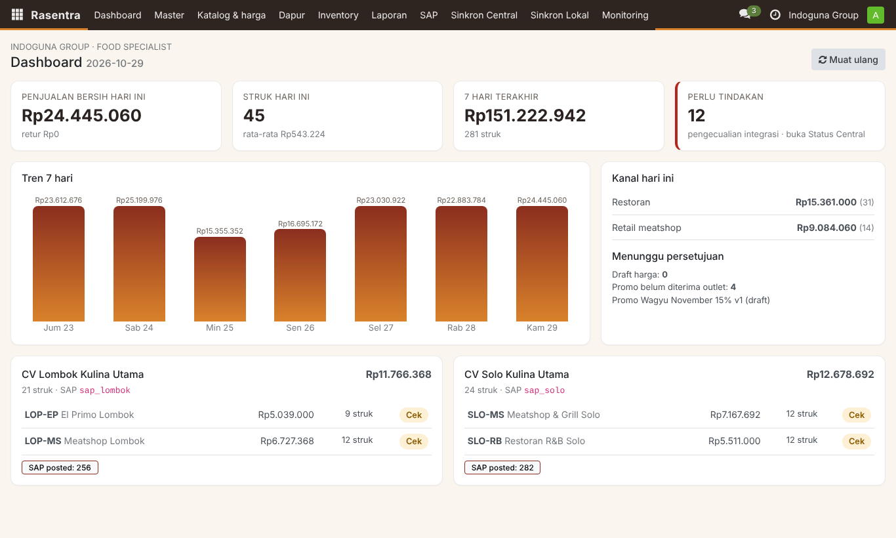
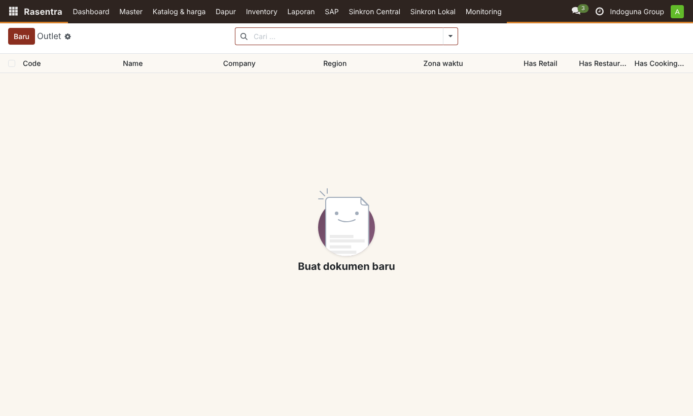
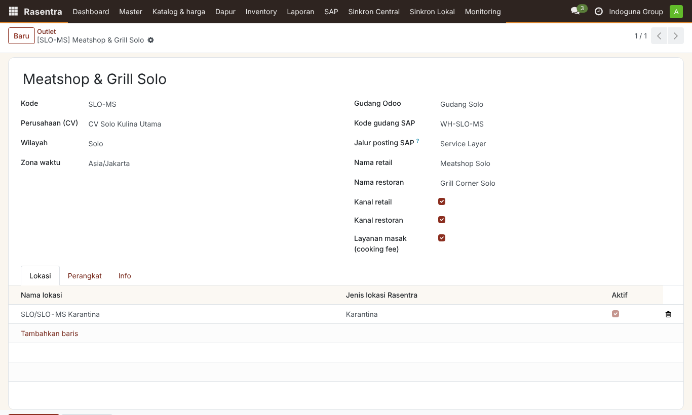
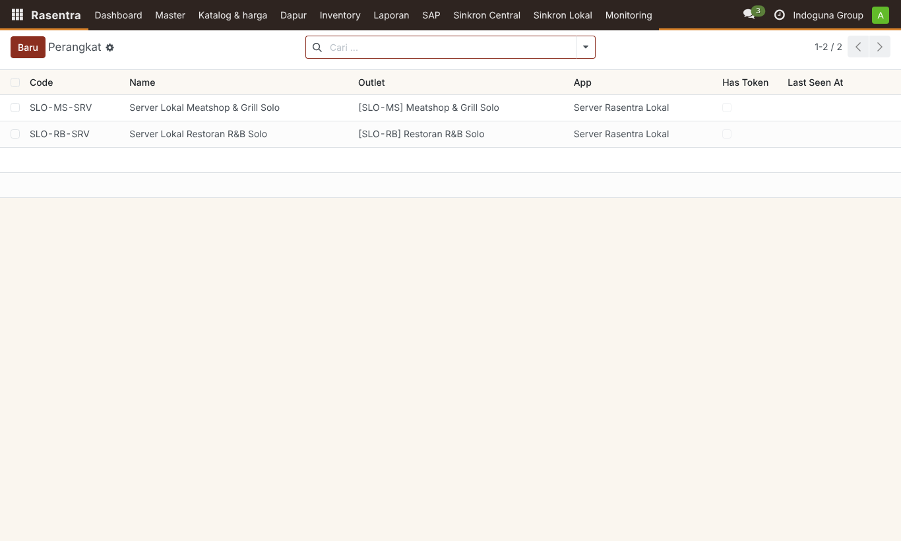
Merchandising
Mengelola harga, promo, resep dan tarif cooking fee dengan prinsip maker-checker. Login demo: merch
Penjelasan alur
Harga, promo, resep dan tarif disimpan sebagai versi. Versi yang terbit tidak diubah; perubahan dibuat sebagai versi baru agar struk lama tetap merujuk aturan yang berlaku saat itu.
Promo dihitung oleh mesin promo Rasentra (port dari Laravel) yang sama di Central dan POS, termasuk mode exclusive/stackable/best benefit, batas diskon dan penanggung (internal, pemasok, bank, platform).
Resep menu memakai baris modifier (mis. extra butter, saus lada hitam, tanpa bawang putih) sehingga stok dapur terpotong sesuai pilihan tamu.
Cara memakai Rasentra dalam alur ini
- Buat versi harga — Katalog & harga → Versi harga (outlet/kanal)
- Terbitkan harga — tombol Terbitkan → publikasi ke outlet
- Rancang promo — Katalog & harga → Promo (jenis, aturan, target)
- Simulasikan keranjang — Simulasi: diskon dan alokasi per baris
- Disetujui orang lain — Admin/merch lain menerbitkan (bukan pembuat)
- Pantau penerimaan outlet — status ack per outlet target
- Kelola resep berversi — Dapur → Resep: menu, saus, modifier
- Tarif cooking fee — Katalog & harga → Aturan cooking fee
Tampilan
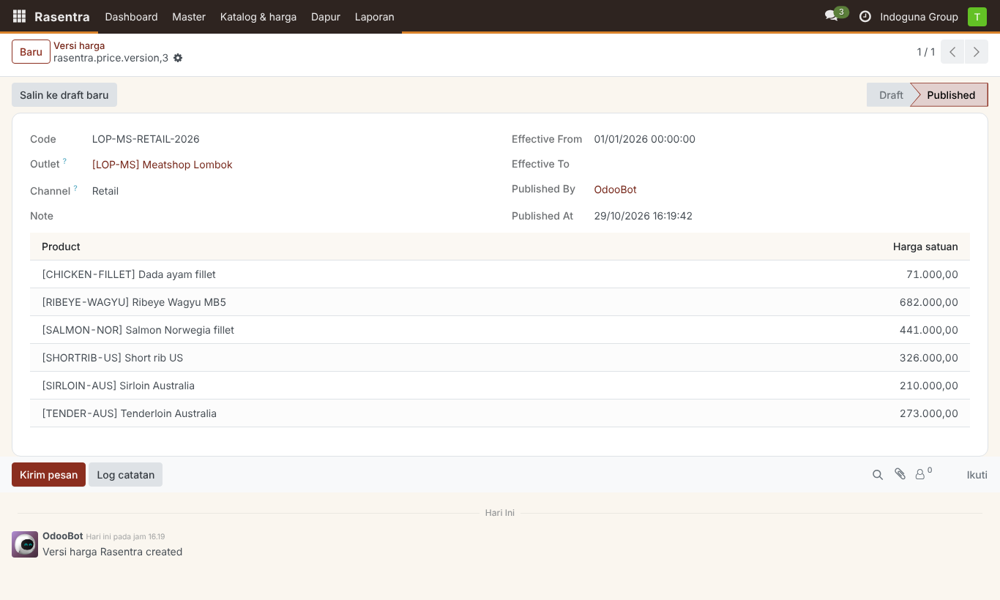
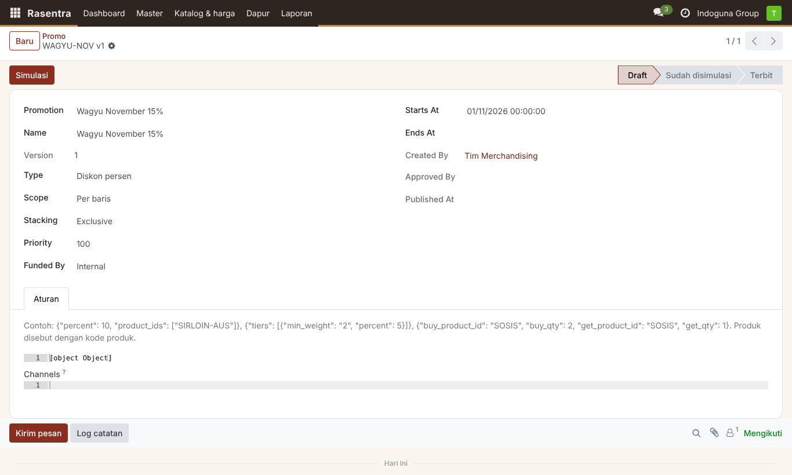
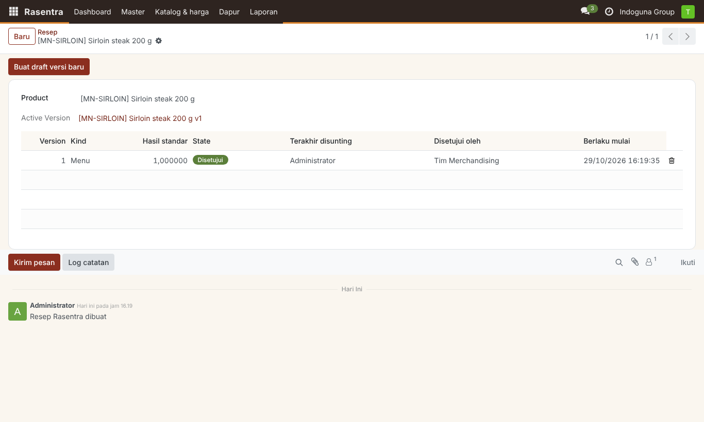
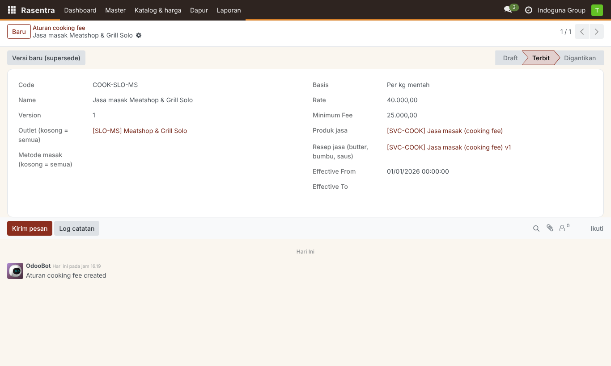
Finance
Memastikan setiap struk sampai ke SAP tepat satu kali, menangani pengecualian, dan mencocokkan penjualan harian. Login demo: finance
Penjelasan alur
Struk dari Lokal masuk lewat inbox sinkron dan diproyeksikan menjadi Struk HQ. Cron memposting ke SAP B1 sebagai Invoice + IncomingPayment; retur sebagai CreditNote + pembayaran keluar.
Bila mapping produk, gudang atau metode bayar belum ada, struk tidak diposting dan muncul sebagai pengecualian. Setelah mapping dilengkapi, posting ulang memeriksa SAP lebih dulu sehingga tidak ganda.
Rekonsiliasi membandingkan tutup hari Lokal dengan struk yang diterima Central: cocok, menunggu, atau selisih dengan daftar nomor struk yang hilang/lebih.
Cara memakai Rasentra dalam alur ini
- Buka Status Central — Monitoring → Status Central
- Periksa antrean SAP — SAP → Dokumen SAP (gagal, parsial, perlu dicek)
- Selesaikan pengecualian — SAP → Pengecualian (mis. mapping kosong)
- Lengkapi mapping & retry — SAP → Mapping, lalu Posting SAP sekarang
- Rekonsiliasi harian — Monitoring → Rekonsiliasi (cocok/selisih)
- Impor XML sistem lama — SAP → XML NMEXML → Unggah XML
- Laporan penjualan & stok — Laporan → Struk HQ, baris, diskon, stok
Tampilan
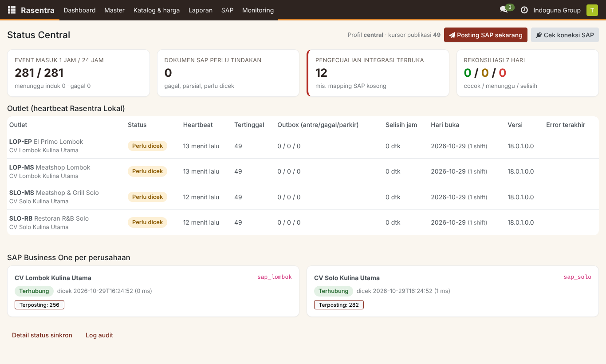
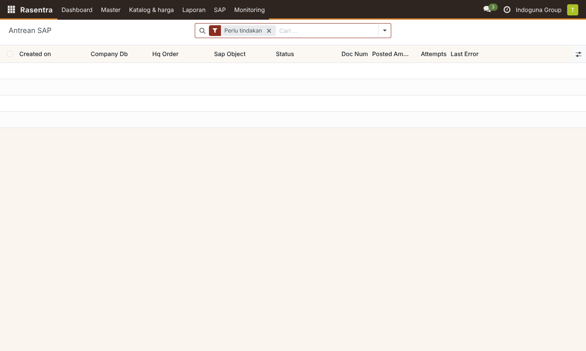
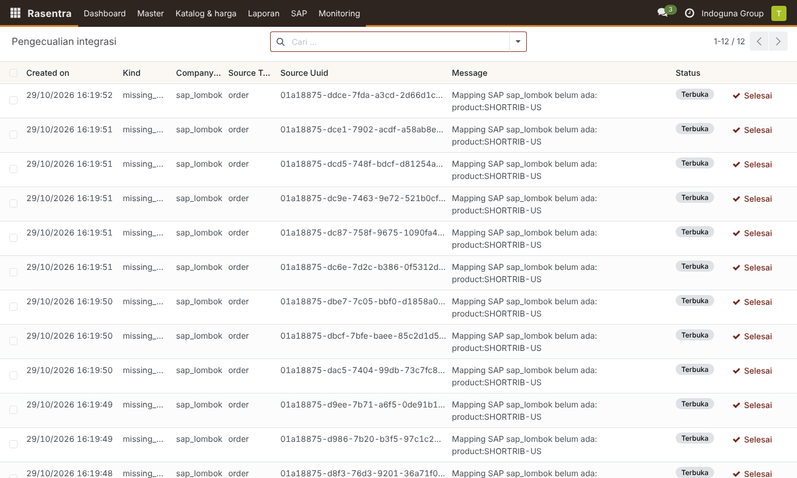
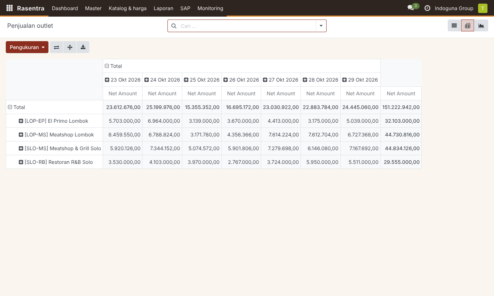
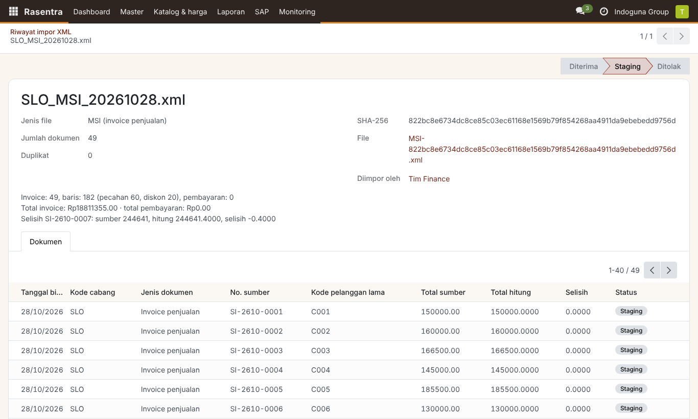
Kepala outlet
Menjalankan hari operasional outlet dan memberi persetujuan sesuai limit. Login demo: solo.kepala
Penjelasan alur
Persetujuan selalu memakai PIN kepala outlet (atau admin) dan dibatasi limit approval. Setiap approval tercatat di log audit beserta alasan.
Opname dilakukan dua putaran: produk yang selisih dihitung ulang oleh orang berbeda; penghitung tidak boleh menyetujui hitungannya sendiri.
Cara memakai Rasentra dalam alur ini
- Buka kasir & hari — POS: Kontrol pembukaan (kas awal)
- Setujui dengan PIN — void, diskon manual, hold pack, batal masak
- Pantau stok & kedaluwarsa — Inventory → Handheld: cek
- Setujui opname — Inventory → Sesi opname → Setujui
- Tutup sesi kasir — POS: tutup kas, selisih dicatat
- Tutup hari — Sinkron Lokal: tutup hari → Central
Tampilan
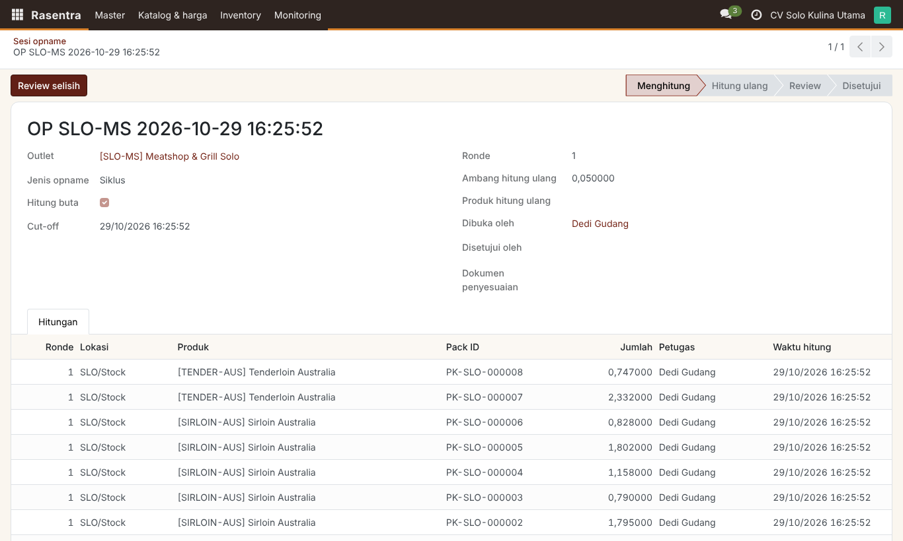
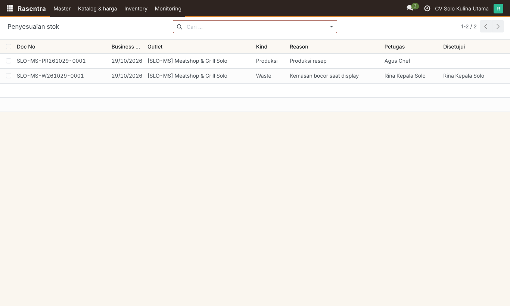
Kasir meatshop
Menjual daging ber-Pack ID dengan harga dan promo yang benar, lalu menerima pembayaran. Login demo: solo.kasir
Penjelasan alur
Daging tidak dijual dengan memilih produk lalu mengetik berat: kasir men-scan label Pack ID sehingga berat, harga dan kedaluwarsa diambil dari pack. Pack yang sama tidak bisa masuk dua keranjang.
Barang retail biasa (garam, saus botol) tetap bisa dipilih dari layar produk atau di-scan barcode-nya.
Cara memakai Rasentra dalam alur ini
- Masuk POS dengan PIN — POS: Buka Kasir → PIN karyawan
- Scan Pack ID — pack dikunci di server untuk keranjang ini
- Promo otomatis — mesin promo menghitung diskon per baris
- Pembayaran — Tunai, QRIS, EDC; QRIS menunggu konfirmasi
- Struk & sinkron — outbox → Central → SAP
- Retur — alasan wajib, pack ke karantina
Tampilan
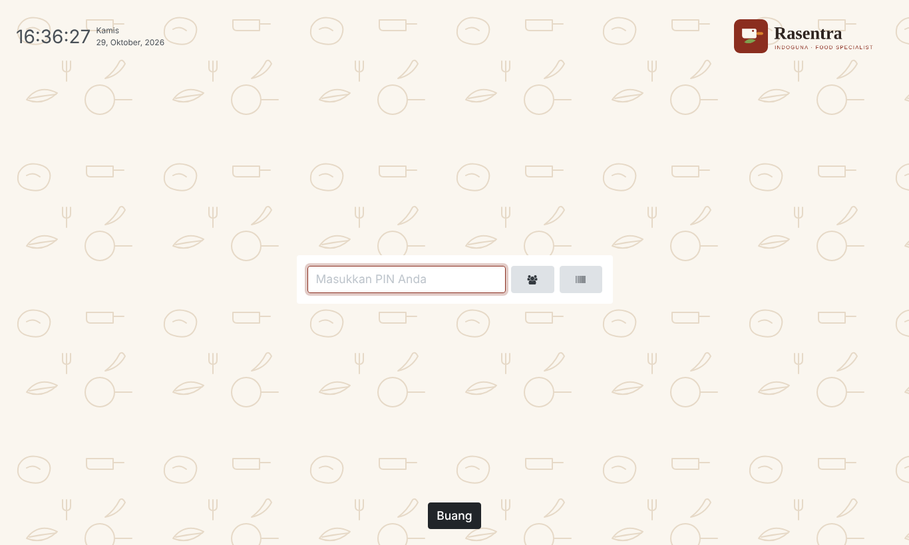
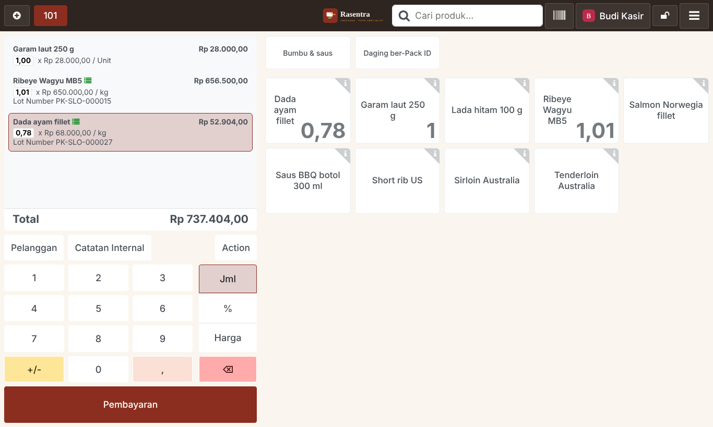
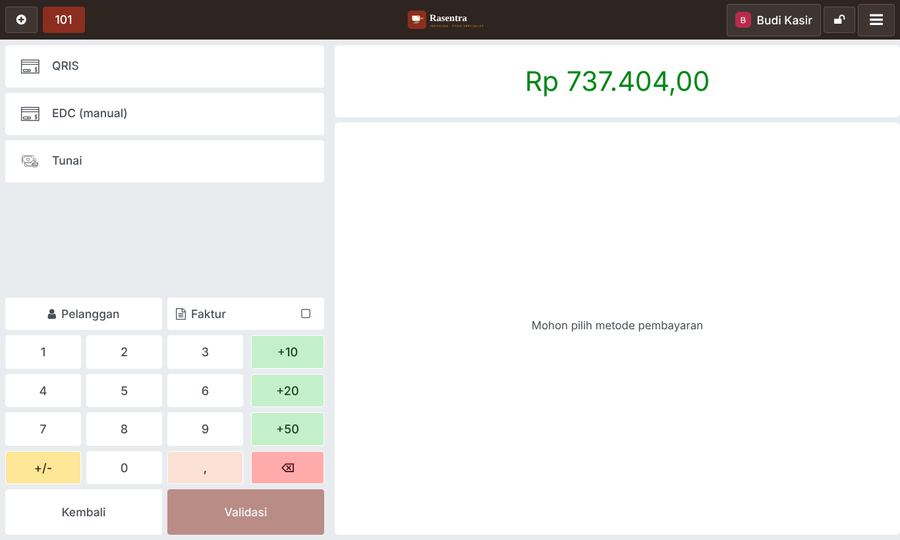
Pelayan restoran
Melayani meja dari tablet: pesanan dengan modifier, kirim ke dapur, pantau status dan minta tagihan. Login demo: solo.pelayan
Penjelasan alur
Setiap kedatangan tamu membuka kunjungan meja dengan token baru, sehingga pesanan tidak pernah masuk ke tamu sebelumnya setelah meja dibayar dan dibuka lagi.
Badge pada denah meja diperbarui tiap 10 detik dari server: jumlah item sedang dimasak, siap diantar, item belum dikirim dan meja yang sudah minta tagihan.
Cara memakai Rasentra dalam alur ini
- Pilih meja di denah — POS restoran: peta meja + status dapur
- Catat pesanan & modifier — kematangan, saus, tambahan
- Kirim ke dapur — tombol Order: hanya item baru/tambahan
- Pantau status — badge meja: Masak, Siap, Belum kirim
- Pindah / gabung meja — transfer meja = gabung kunjungan
- Minta tagihan & bayar — Tagihan → status meja 'Tagihan'
Tampilan
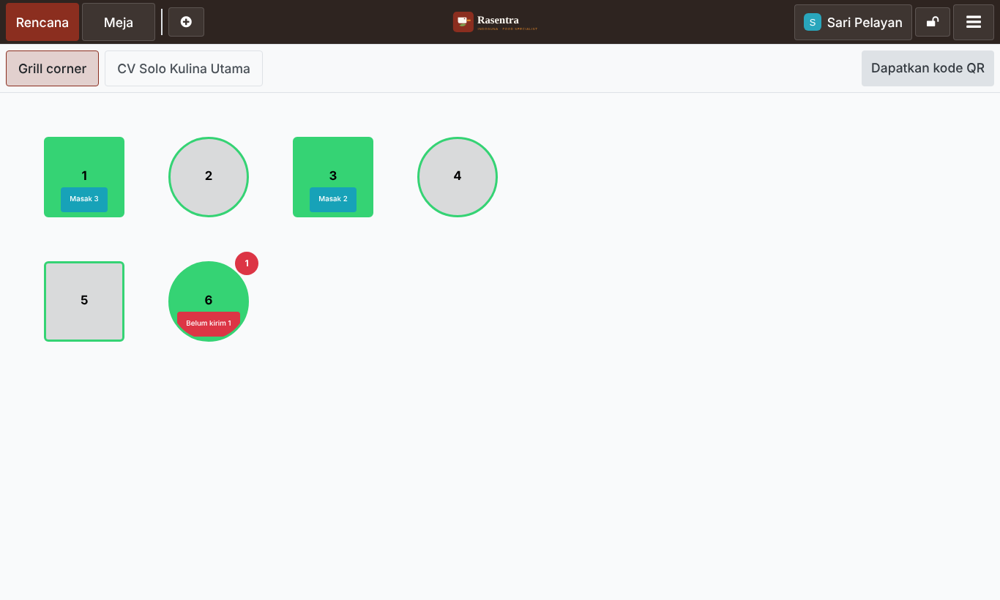
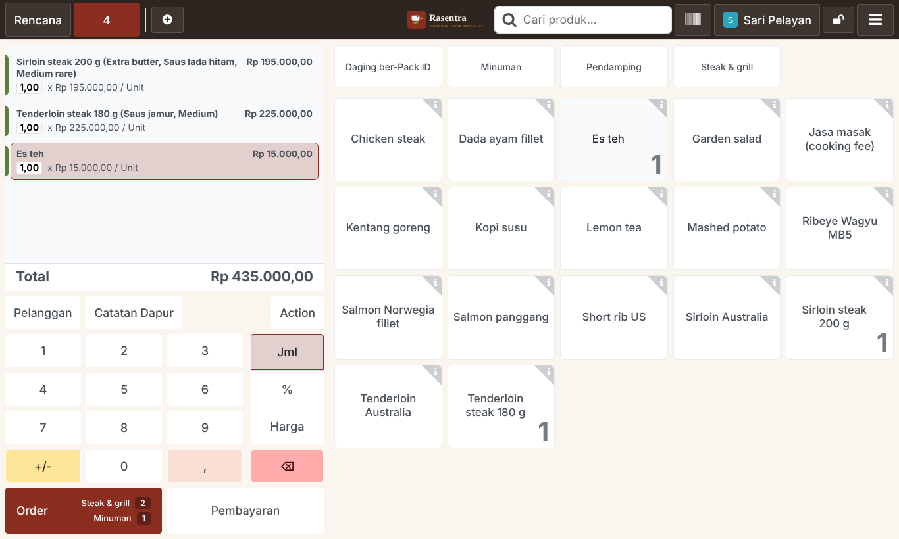
Chef / dapur
Memasak sesuai tiket per station, memotong stok sesuai resep, dan mencatat produksi serta susut. Login demo: solo.dapur
Penjelasan alur
Konsumsi stok terjadi saat item mulai dimasak (bukan saat dipesan), memakai versi resep yang aktif dan modifier pilihan tamu. Histori konsumsi menyimpan versi resep yang dipakai.
Produksi batch mencatat bahan masuk dan hasil timbang aktual. Susut di atas toleransi (2%) wajib diberi alasan dari daftar.
Cara memakai Rasentra dalam alur ini
- Buka layar dapur — Rasentra → Dapur → Layar dapur (KDS)
- Mulai masak — bump pertama: resep memotong stok dapur
- Siap — bump kedua: pelayan melihat 'Siap'
- Batal diminta — konfirmasi batal; setelah masak = waste
- Produksi saus/kaldu — Produksi batch: hasil aktual & susut
- Analisis waktu saji — KDS → Analisis
Tampilan
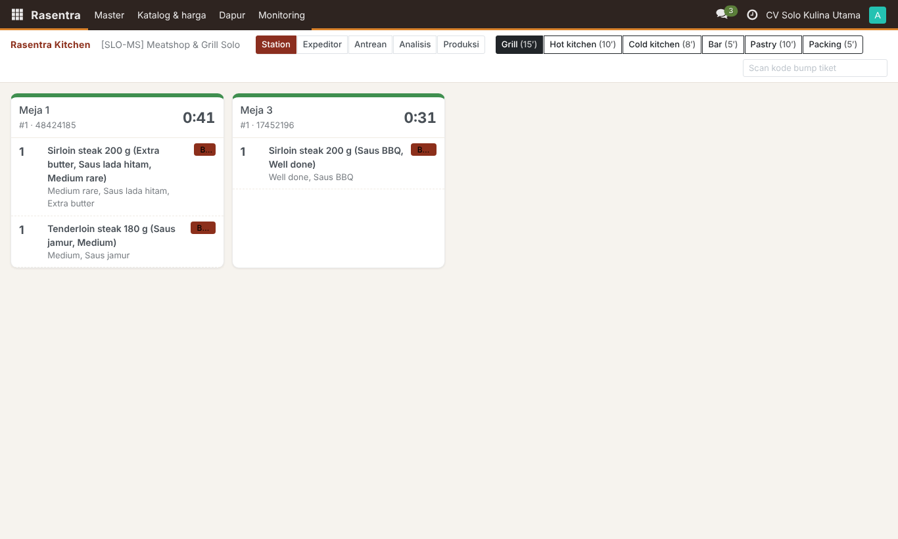
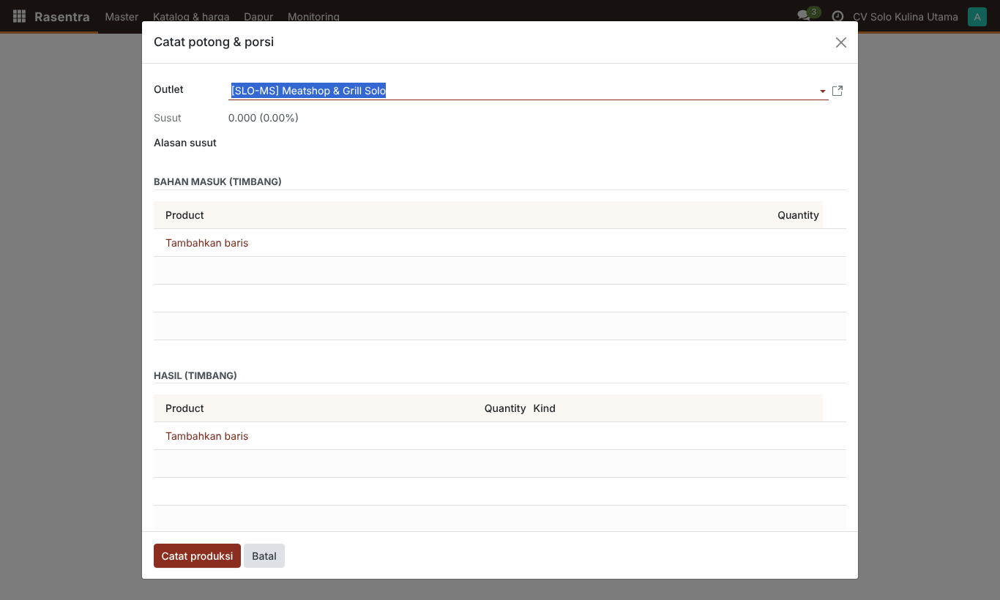
Petugas gudang & opname
Menerima Pack ID kiriman pusat, menjaga stok layak jual, dan melakukan opname. Login demo: solo.gudang
Penjelasan alur
Pack dikirim pusat berstatus 'shipped'. Scan terima memindahkan stok dari transit ke lokasi stok outlet; penolakan memindahkannya ke karantina sehingga tidak bisa dijual.
Semua penyesuaian (waste, opname, produksi, release) menjadi dokumen bernomor yang dikirim ke Central dan diposting ke SAP sebagai InventoryGenExits/Entries.
Cara memakai Rasentra dalam alur ini
- Scan terima pack — Inventory → Handheld: Terima
- Tolak bila rusak — masuk karantina, tidak menambah stok jual
- Cek kedaluwarsa — Handheld: Cek / daftar hampir kedaluwarsa
- Waste dengan approval — Handheld: Waste + PIN kepala outlet
- Opname per lokasi — Buka sesi opname → scan lokasi & pack
- Kirim untuk disetujui — kepala outlet menyetujui, stok disesuaikan
Tampilan
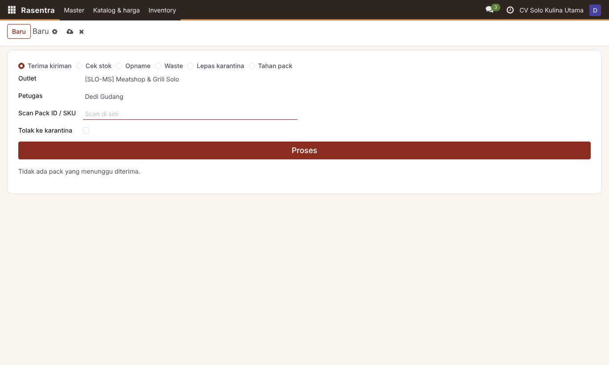
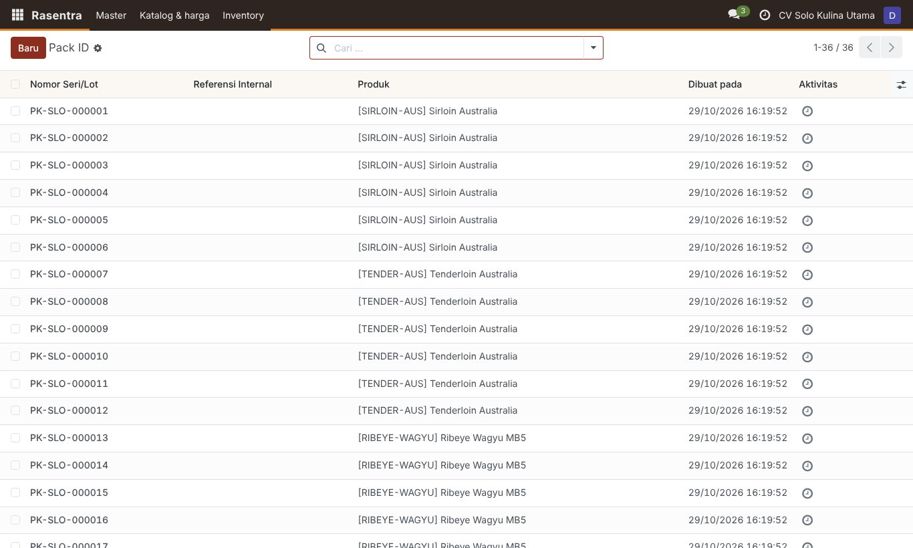
Dibangun dari rasentra_docs/tools/build_docs.py.